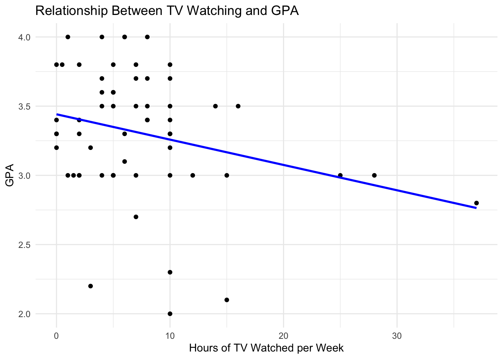
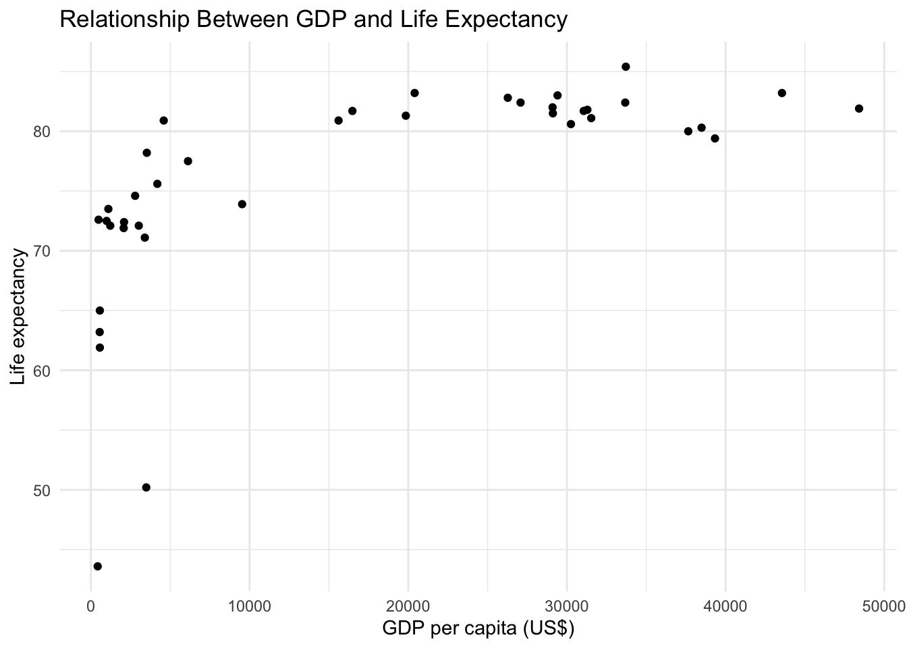
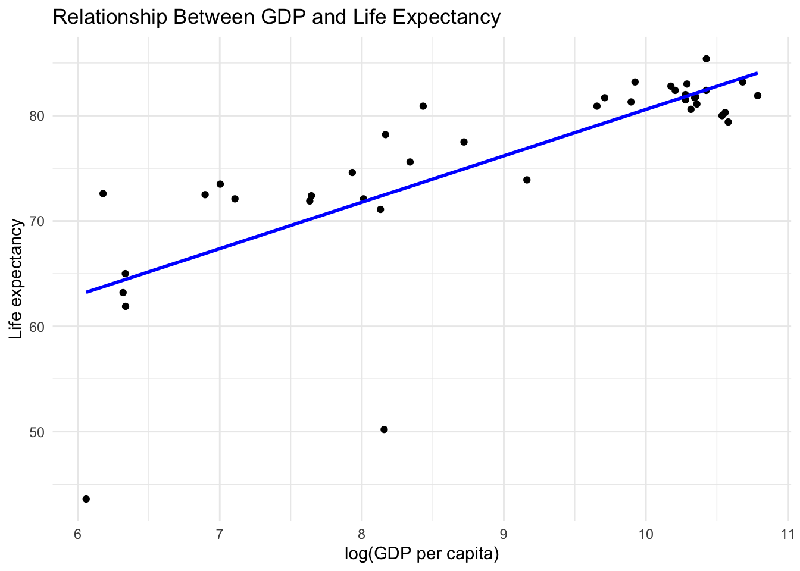
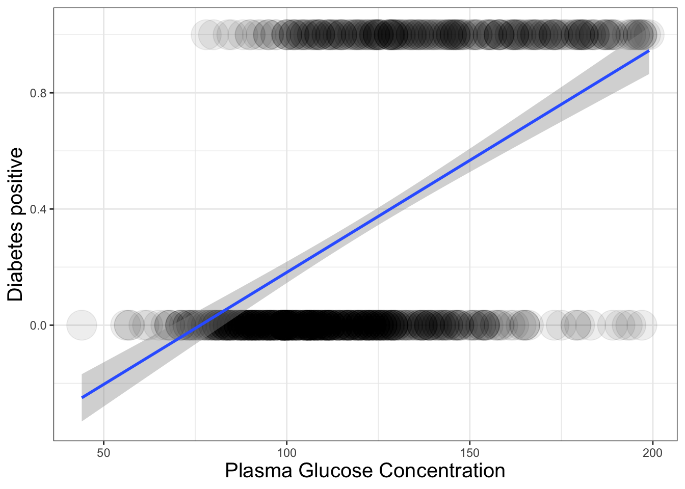
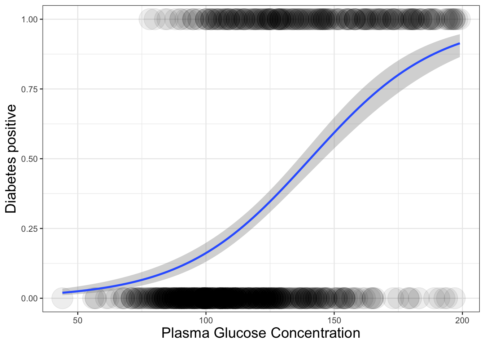
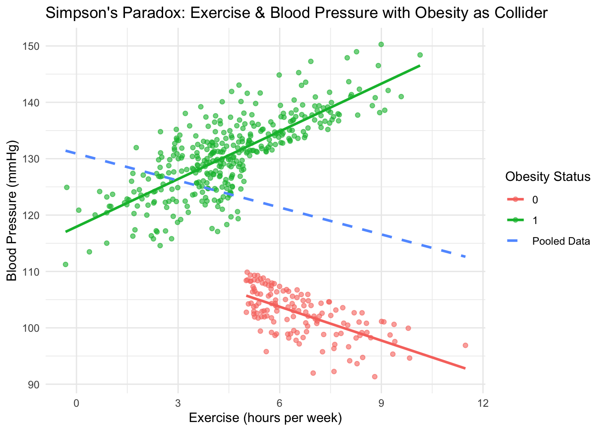

x <- 5
x + 10[1] 15In this tutorial, you’ll learn (or refresh your memory) about hypothesis testing, ordinary least squares (OLS) regression, transformation, logistic regression, and we’ll discuss why we can’t make causal statement by simply adding control variables to our model.
By the end of this tutorial, you should be familiar with the following:
1. Basic concepts of hypothesis testing
2. OLS regression: single and multiple linear regression, regression with interaction term
3. Transformation
4. Logistic regression
Each week, the tutorial will include all of the code to demonstrate some of the fundamental aspects of the work we are doing. The tutorials on the website include R code and output. If you would like to execute & edit the code, please download the .qmd file from Google Classroom, and execute & edit the code in RStudio.
You’ll do code inside of cells that look like this:
You can run the code inside the cell by hitting the play button in the upper right-hand side of the cell. When the code is running, you’ll notice that the play button transforms, indicating that the operation is being performed.
This tutorial assumes a basic familiarity with R, so we will not be covering foundational topics such as setting the working directory, reading in data, or installing packages. If you’d like a refresher, there are many excellent online resources available, and you are always welcome to reach out to the instructor for guidance.
In this tutorial, we will be using the following packages, make sure you have these packages installed.
── Attaching core tidyverse packages ──────────────────────── tidyverse 2.0.0 ──
✔ dplyr 1.1.4 ✔ readr 2.1.5
✔ forcats 1.0.0 ✔ stringr 1.5.1
✔ ggplot2 3.5.1 ✔ tibble 3.2.1
✔ lubridate 1.9.4 ✔ tidyr 1.3.1
✔ purrr 1.0.2
── Conflicts ────────────────────────────────────────── tidyverse_conflicts() ──
✖ dplyr::filter() masks stats::filter()
✖ dplyr::lag() masks stats::lag()
ℹ Use the conflicted package (<http://conflicted.r-lib.org/>) to force all conflicts to become errors
Please cite as:
Hlavac, Marek (2022). stargazer: Well-Formatted Regression and Summary Statistics Tables.
R package version 5.2.3. https://CRAN.R-project.org/package=stargazer A hypothesis is a statement about a population. We test the hypothesis using a sample. Null Hypothesis (\(H_0\)) is a statement that the parameter takes a particular value.Alternative Hypothesis (\(H_a\)): a statement that the parameter falls in some range of values. Usually \(H_0\) corresponds to no effect while \(H_a\) represents some type of effect.
In hypothesis testing, we start by assuming \(H_0\) is true, then look at whether the sample contradicts it. If it does, we reject the \(H_0\) in favor of \(H_a\). If it does not, then we fail to reject \(H_0\). We never accept the null hypothesis.
The \(\alpha\)-level is a threshold such that you reject \(H_0\). It is typically set as 0.05 or 0.01. To determine whether we reject \(H_0\), we rely on statistical measures that quantify the strength of the evidence against the null hypothesis. Two key components in this decision process are the t-value and the p-value.
The t-value measures how far our sample estimate is from the null hypothesis in terms of standard error. A larger absolute t-value suggests stronger evidence against \(H_0\).
\[t=\frac{\bar{x} - \mu_0}{{s}/{\sqrt{n}}}\]
The p-value tells us the probability of observing a result at least as extreme as our test statistic, assuming \(H_0\) is true. A smaller p-value indicates stronger evidence against \(H_0\).
A manufacturer says the battery of their laptop lasts 10 hours on average. We want to test whether this is true (\(\mu = 10\)). Because we are interested in deviations from 10 in either direction, this is a two-sided test. Now we have a sample, with sample mean (\(\bar{x}\)) = 9.04, sample standard deviation (\({s}\)) = 1.83, and sample size = 30. Can we reject the null hypothesis?
We first calculate t-value based on sample statistics:
\[t=\frac{\bar{x} - \mu_0}{{s}/{\sqrt{n}}}=\frac{9.04-10}{1.83/{\sqrt{30}}}=-2.87\]
We then need to find the critical value base on our \(\alpha\)-level. Let’s set \(\alpha=0.05\). Since the absolute value of t-value is greater than the critical value, we can reject the null hypothesis.
We can manually calculate the p-value. With a p-value smaller than 0.05 (the \(\alpha\)-level), we can also reject the null hypothesis.
So far, we have explored hypothesis testing, which allows us to assess whether a population parameter, such as a mean, differs from a hypothesized value. While this approach helps us make inferences about a single variable, we often want to go further—examining how one variable changes in response to another and making predictions.
This is where Ordinary Least Squares (OLS) regression becomes useful. OLS regression enables us to estimate the relationship between an independent variable and a dependent variable by fitting a line that minimizes the sum of squared errors, allowing us to quantify effects and make informed predictions.
To start, let’s consider the simplest case—a single independent variable predicting an outcome. This is known as simple linear regression, where we model a straight-line relationship between the predictor and the response variable. We will walk through an example using student.survey data.
subj ge ag hi co dh dr tv sp ne ah ve pa pi re
1 1 m 32 2.2 3.5 0 5.0 3 5 0 0 FALSE r conservative most weeks
2 2 f 23 2.1 3.5 1200 0.3 15 7 5 6 FALSE d liberal occasionally
3 3 f 27 3.3 3.0 1300 1.5 0 4 3 0 FALSE d liberal most weeks
4 4 f 35 3.5 3.2 1500 8.0 5 5 6 3 FALSE i moderate occasionally
5 5 m 23 3.1 3.5 1600 10.0 6 6 3 0 FALSE i very liberal never
6 6 m 39 3.5 3.5 350 3.0 4 5 7 0 FALSE d liberal occasionally
ab aa ld
1 FALSE FALSE FALSE
2 FALSE FALSE NA
3 FALSE FALSE NA
4 FALSE FALSE FALSE
5 FALSE FALSE FALSE
6 FALSE FALSE NAThis data is from smss package. It consists of responses of graduate students in the social sciences enrolled in STA 6126 in a recent term at the University of Florida. Variables in this data include gender (ge), high school GPA (hi), average number of hours per week that you watch TV (tv), and political affiliation (pa). We start by looking into the relationship between watching TV and high school GPA.
ggplot(data = student.survey, aes(x = tv, y = hi)) +
geom_point() +
geom_smooth(method = "lm", se = FALSE, color = "blue") +
labs(x = "Hours of TV Watched per Week",
y = "GPA",
title = "Relationship Between TV Watching and GPA") +
theme_minimal()`geom_smooth()` using formula = 'y ~ x'
The visualization tells us there’s a negative relationship between watching TV and GPA. We can use OLS regression to test whether this relationship is statistically significant.
Call:
lm(formula = hi ~ tv, data = student.survey)
Residuals:
Min 1Q Median 3Q Max
-1.2583 -0.2456 0.0417 0.3368 0.7051
Coefficients:
Estimate Std. Error t value Pr(>|t|)
(Intercept) 3.441353 0.085345 40.323 <2e-16 ***
tv -0.018305 0.008658 -2.114 0.0388 *
---
Signif. codes: 0 '***' 0.001 '**' 0.01 '*' 0.05 '.' 0.1 ' ' 1
Residual standard error: 0.4467 on 58 degrees of freedom
Multiple R-squared: 0.07156, Adjusted R-squared: 0.05555
F-statistic: 4.471 on 1 and 58 DF, p-value: 0.03879From the OLS regression results, we can model the relationship between hours watching TV and high school GPA: \(hi=3.441−0.0183*tv\). When a student watches 0 hours of TV, their predicted GPA is 3.441. Each additional hour of TV watched per week is associated with a decrease of 0.018 points in the GPA, and the impact is statistically significant at the 95% confidence level.
In reality, most outcomes are influenced by more than one factor. Simple linear regression is often too simplistic to capture complex relationships. Multiple linear regression extends the model by including multiple independent variables, allowing us to control for additional factors and better isolate the effect of each predictor. Let’s explore how this works with the same data.
Call:
lm(formula = hi ~ tv + male + pa, data = student.survey)
Residuals:
Min 1Q Median 3Q Max
-1.11908 -0.25376 0.02283 0.31597 0.68353
Coefficients:
Estimate Std. Error t value Pr(>|t|)
(Intercept) 3.428977 0.133216 25.740 <2e-16 ***
tv -0.017175 0.009004 -1.907 0.0617 .
male -0.138154 0.117482 -1.176 0.2447
pai 0.161780 0.134692 1.201 0.2349
par 0.024887 0.153392 0.162 0.8717
---
Signif. codes: 0 '***' 0.001 '**' 0.01 '*' 0.05 '.' 0.1 ' ' 1
Residual standard error: 0.446 on 55 degrees of freedom
Multiple R-squared: 0.1223, Adjusted R-squared: 0.0585
F-statistic: 1.917 on 4 and 55 DF, p-value: 0.1206Results show that after controlling for gender and party affiliation, hours of TV watching still has a statistically significant impact on GPA at the 90% confidence level. Each additional hour of TV watched per week is associated with a 0.017 point decrease in GPA. Compared to Democrats, Independents have a 0.16 point higher GPA, but this difference is not statistically significant.
In this model, we use Democrats as the reference category (baseline) for party affiliation. You can also change the baseline into other category using relevel() function.
If we set Independents as the baseline category for party affiliation, how does being Republican affect high school GPA compared to Independents?
So far, we have assumed that each independent variable has an independent and additive effect on the dependent variable. However, in many cases, the effect of one variable depends on the level of another. This is where interaction terms come in. By including interaction terms in our regression model, we can capture how the relationship between one variable and the outcome changes depending on another variable.
Call:
lm(formula = hi ~ tv * male, data = student.survey)
Residuals:
Min 1Q Median 3Q Max
-1.18709 -0.23932 0.07162 0.30540 0.74298
Coefficients:
Estimate Std. Error t value Pr(>|t|)
(Intercept) 3.539245 0.130413 27.139 <2e-16 ***
tv -0.021885 0.012852 -1.703 0.0941 .
male -0.177346 0.173034 -1.025 0.3098
tv:male 0.004405 0.017531 0.251 0.8025
---
Signif. codes: 0 '***' 0.001 '**' 0.01 '*' 0.05 '.' 0.1 ' ' 1
Residual standard error: 0.4482 on 56 degrees of freedom
Multiple R-squared: 0.09761, Adjusted R-squared: 0.04926
F-statistic: 2.019 on 3 and 56 DF, p-value: 0.1216In this model, \(GPA=3.539−0.0219TV−0.1773Male+0.0044(TV*Male)\). Unlike previous models where we could interpret coefficients directly, interaction terms modify the effect of one variable depending on the value of another. This means we need to substitute specific values to understand the impact on different groups. For female students (male=0), watching one additional hour of TV is associated with a 0.0219 point decrease in GPA. For male students (male=1), each additional hour of TV is associated with a 0.0175 point (\(-0.219+0.044\)) decrease in GPA. Since the interaction term is not statistically significant, it suggests that the relationship between TV watching and GPA is similar for both genders.
To present the results of the three regression models (m1, m2, and m3) side by side in a well-formatted table, you can use the stargazer package in R.
stargazer(m1, m2, m3, type = "text",
title = "Regression Results",
dep.var.labels = "High School GPA",
covariate.labels = c("TV Hours", "Male", "Party Affiliation: Independent", "Party Affiliation: Republican", "TV Hours x Male"),
omit.stat = c("f", "ser"),
no.space = TRUE)
Regression Results
============================================================
Dependent variable:
-----------------------------
High School GPA
(1) (2) (3)
------------------------------------------------------------
TV Hours -0.018** -0.017* -0.022*
(0.009) (0.009) (0.013)
Male -0.138 -0.177
(0.117) (0.173)
Party Affiliation: Independent 0.162
(0.135)
Party Affiliation: Republican 0.025
(0.153)
TV Hours x Male 0.004
(0.018)
Constant 3.441*** 3.429*** 3.539***
(0.085) (0.133) (0.130)
------------------------------------------------------------
Observations 60 60 60
R2 0.072 0.122 0.098
Adjusted R2 0.056 0.059 0.049
============================================================
Note: *p<0.1; **p<0.05; ***p<0.01A key assumption of OLS regression is that there is a linear relationship between the predictors and the outcome. However, in many real-world scenarios, this assumption does not hold. Transformations, such as taking the log or square of a variable, can help linearize relationships, stabilize variance, and improve model fit. We will walk through an example using UNdata data.
Nation HDI Fert Cont Cell Inter GDP CO2 Life Liter FemEc
1 Algeria 0.72 2.5 64 45 NA 2090 2.9 72.4 60.1 41
2 Argentina 0.86 2.4 NA NA NA 3524 3.5 78.2 97.2 48
3 Australia 0.96 1.7 76 719 567 26275 18.3 82.8 NA 79
4 Austria 0.94 1.4 51 879 462 31289 7.8 81.8 NA 66
5 Belgium 0.95 1.7 78 793 386 29096 6.8 82.0 NA 67
6 Brazil 0.79 2.3 77 264 NA 2788 1.8 74.6 88.6 52This data is from the smss package, from the Human Development report of 2005. Variables include female life expectancy (Life), GDP per capita in US dollars (GDP) and total fertility rate (Fert). Let’s first visualize the relationship between GDP and life expectancy.
ggplot(data = UNdata, aes(x = GDP, y = Life)) +
geom_point() +
labs(x = "GDP per capita (US$)",
y = "Life expectancy",
title = "Relationship Between GDP and Life Expectancy") +
theme_minimal()
This shows a logarithmic relationship that cannot be captured using a straight line. So we need to transform the variable before running OLS regressions.
ggplot(data = UNdata, aes(x = log(GDP), y = Life)) +
geom_point() +
geom_smooth(method = "lm", se = FALSE, color = "blue") +
labs(x = "log(GDP per capita)",
y = "Life expectancy",
title = "Relationship Between GDP and Life Expectancy") +
theme_minimal()`geom_smooth()` using formula = 'y ~ x'
Now we see a linear relationship after we take the nature log of GDP per capita. Then we can run an OLS regression like earlier.
Call:
lm(formula = Life ~ log(GDP) + Fert, data = UNdata)
Residuals:
Min 1Q Median 3Q Max
-21.9848 -1.2475 0.2952 2.1913 6.5718
Coefficients:
Estimate Std. Error t value Pr(>|t|)
(Intercept) 60.4345 8.1732 7.394 1e-08 ***
log(GDP) 2.6544 0.7149 3.713 0.000691 ***
Fert -3.5365 0.9859 -3.587 0.000986 ***
---
Signif. codes: 0 '***' 0.001 '**' 0.01 '*' 0.05 '.' 0.1 ' ' 1
Residual standard error: 5.056 on 36 degrees of freedom
Multiple R-squared: 0.6997, Adjusted R-squared: 0.683
F-statistic: 41.93 on 2 and 36 DF, p-value: 3.954e-10The results suggest that 1-unit increase in log(GDP) is associated with a 2.65 year increase in female life expectancy, and the impact is highly statistically significant. However, if we want to interpret the result using the original GDP level, it would be more complicated.
Until now, we have focused on regression models where the dependent variable is continuous. But what if our outcome is binary, such as “yes/no” or “success/failure”? In such cases, linear regression is not appropriate.
The example below shows the relationship between glucose level, body mass, and diabetes.
data("PimaIndiansDiabetes2", package = "mlbench")
PimaIndiansDiabetes2 %>%
as_tibble() %>%
mutate(diabetes_int = ifelse(diabetes == "pos", 1, 0)) %>%
select(c("glucose", "mass", "diabetes_int")) %>%
rename(diabetes = diabetes_int) %>%
na.omit() -> pima
scatter_p <- pima %>%
ggplot(aes(glucose, diabetes)) +
geom_point(alpha = 0.07, size = 10) +
labs(x = "Plasma Glucose Concentration",
y = "Diabetes positive") +
theme_bw() +
theme(axis.title = element_text(size = 15))
linear_p <- scatter_p +
geom_smooth(method = "lm")
linear_p`geom_smooth()` using formula = 'y ~ x'
Instead, we use logistic regression, which models the probability of an event occurring.
logistic_p <- scatter_p +
geom_smooth(method = "glm",
method.args = list(family = "binomial"))
logistic_p`geom_smooth()` using formula = 'y ~ x'
To run logistic regression in R, instead of the lm() function, we use glm() function, and specify family=binomial.
Call:
glm(formula = diabetes ~ glucose, family = binomial(link = "logit"),
data = pima)
Coefficients:
Estimate Std. Error z value Pr(>|z|)
(Intercept) -5.690114 0.439811 -12.94 <2e-16 ***
glucose 0.040457 0.003391 11.93 <2e-16 ***
---
Signif. codes: 0 '***' 0.001 '**' 0.01 '*' 0.05 '.' 0.1 ' ' 1
(Dispersion parameter for binomial family taken to be 1)
Null deviance: 974.75 on 751 degrees of freedom
Residual deviance: 777.72 on 750 degrees of freedom
AIC: 781.72
Number of Fisher Scoring iterations: 4The coefficient 0.0405 represents the log-odds change in the probability of having diabetes for each one-unit increase in glucose level.
Simpson’s paradox means that a tend appears in different groups of data, but disappears or reverses when these groups are combined. Collider bias occurs when we condition on (control for, subset by, or select a sample based on) a variable that is influenced by two other variables. Let’s look into an example using simulated data.
set.seed(123)
n <- 500
# Generate exercise levels (hours per week)
exercise <- rnorm(n, mean = 5, sd = 2)
# Generate blood pressure - Randomly generated, NO relationship with exercise
blood_pressure <- rnorm(n, mean = 120, sd = 5)
# Obesity is influenced by both exercise and blood pressure (collider)
obesity <- ifelse(exercise < 5 | blood_pressure > 120, 1, 0)
# Modify Blood Pressure to create group-specific effects
blood_pressure[obesity == 0] <- blood_pressure[obesity == 0] - 2 * exercise[obesity == 0] # Exercise LOWERS BP for non-obese
blood_pressure[obesity == 1] <- blood_pressure[obesity == 1] + 2 * exercise[obesity == 1] # Exercise RAISES BP for obese
# Create dataframe
data <- data.frame(exercise, blood_pressure, obesity)The visualization below shows an example of Simpson’s Paradox: the trend differs when analyzing separate groups compared to the pooled data.
ggplot(data, aes(x = exercise, y = blood_pressure, color = as.factor(obesity))) +
geom_point(alpha = 0.6) +
geom_smooth(method = "lm", se = FALSE) +
geom_smooth(aes(color = "Pooled Data"), method = "lm", se = FALSE, data = data, linetype = "dashed") +
labs(title = "Simpson's Paradox: Exercise & Blood Pressure with Obesity as Collider",
x = "Exercise (hours per week)",
y = "Blood Pressure (mmHg)",
color = "Obesity Status") +
theme_minimal()`geom_smooth()` using formula = 'y ~ x'
`geom_smooth()` using formula = 'y ~ x'
In our case, obesity is a collider because it is influenced by both exercise and blood pressure. Let’s examine the regression results by running models on the pooled data, within each obesity group separately, and with obesity as a control variable.
# Overall regression (ignoring obesity)
overall <- lm(blood_pressure ~ exercise, data = data)
# Regression within subgroup
obese <- lm(blood_pressure ~ exercise, data = data %>% filter(obesity == 1))
non_obese <- lm(blood_pressure ~ exercise, data = data %>% filter(obesity == 0))
# Controlling for obesity
control <- lm(blood_pressure ~ exercise + obesity, data = data)
stargazer(overall, obese, non_obese, control,
type = "text")
=======================================================================================================================
Dependent variable:
---------------------------------------------------------------------------------------------------
blood_pressure
(1) (2) (3) (4)
-----------------------------------------------------------------------------------------------------------------------
exercise -1.593*** 2.819*** -1.997*** 2.048***
(0.314) (0.128) (0.211) (0.135)
obesity 32.395***
(0.586)
Constant 130.907*** 117.935*** 115.721*** 88.997***
(1.705) (0.619) (1.422) (0.991)
-----------------------------------------------------------------------------------------------------------------------
Observations 500 362 138 500
R2 0.049 0.575 0.396 0.867
Adjusted R2 0.047 0.573 0.392 0.866
Residual Std. Error 13.651 (df = 498) 4.443 (df = 360) 3.206 (df = 136) 5.112 (df = 497)
F Statistic 25.717*** (df = 1; 498) 486.228*** (df = 1; 360) 89.334*** (df = 1; 136) 1,618.847*** (df = 2; 497)
=======================================================================================================================
Note: *p<0.1; **p<0.05; ***p<0.01In Model 1, we see that exercise has a negative impact on blood pressure, which makes sense. However, when we examine different subgroups, we find that the direction of the effect varies across groups—a classic example of Simpson’s Paradox. Surprisingly, in Model 4, after controlling for obesity, the coefficient for exercise flips from negative to positive. Does this mean that exercising regularly increases blood pressure? Of course not. This misleading result occurs because obesity is a collider, and controlling for a collider introduces bias rather than reducing it.
Adding too many control variables can lead to multicollinearity, where some predictors become highly correlated with each other. This makes it difficult to determine the independent effect of each variable, leading to unstable estimates and inflated standard errors. As a result, even if a variable has a real effect, its coefficient may appear insignificant due to the overlap in explanatory power with other controls. Let’s look into the example below.
In this example, we have 100 employee with employees’ ages range from 25 to 65. Everyone in the company graduated college at the age of 22, and started working there. Everyone is paid roughly based on their experience. If we run regression using both age and experience as independent variables, we have multicollinearity problem.
set.seed(123)
age <- sample(25:65, size = 100, replace = TRUE)
experience <- age - 22
salary <- 2000 * (experience) + rnorm(100, sd = 20000)
summary(lm(salary ~ age + experience))
Call:
lm(formula = salary ~ age + experience)
Residuals:
Min 1Q Median 3Q Max
-40598 -12992 -983 11339 65231
Coefficients: (1 not defined because of singularities)
Estimate Std. Error t value Pr(>|t|)
(Intercept) -41856.8 8607.8 -4.863 4.41e-06 ***
age 1943.2 181.7 10.694 < 2e-16 ***
experience NA NA NA NA
---
Signif. codes: 0 '***' 0.001 '**' 0.01 '*' 0.05 '.' 0.1 ' ' 1
Residual standard error: 19630 on 98 degrees of freedom
Multiple R-squared: 0.5385, Adjusted R-squared: 0.5338
F-statistic: 114.4 on 1 and 98 DF, p-value: < 2.2e-16This situation is easy to detect because R completely omits the coefficient for experience, indicating perfect multicollinearity. However, in real-world cases, variables may be highly correlated but not perfectly related, meaning R will still report a coefficient. For example, let’s add some variation to age.
Call:
lm(formula = salary ~ age + experience)
Residuals:
Min 1Q Median 3Q Max
-40591 -12986 -992 11336 65225
Coefficients:
Estimate Std. Error t value Pr(>|t|)
(Intercept) 757.713 45204.994 0.017 0.987
age 6.244 2049.783 0.003 0.998
experience 1936.977 2066.586 0.937 0.351
Residual standard error: 19740 on 97 degrees of freedom
Multiple R-squared: 0.5385, Adjusted R-squared: 0.529
F-statistic: 56.59 on 2 and 97 DF, p-value: < 2.2e-16Now, we see that although R reports coefficients for both variables, the results are quite strange. The standard errors are extremely high. The p-values are large, meaning we fail to detect a significant relationship – even though age and experience should clearly influence salary. However, the F-test p-value is still small, suggesting that at least one of the predictors matters – we just can’t tell which one!
This demonstrates two key indicators of multicollinearity: 1. Large standard errors (high uncertainty in estimates). 2. High p-values for individual variables, despite a significant overall model (low F-test p-value).
Multicollinearity makes estimates unreliable, leading to misleading or biased results. So, be cautious when adding too many highly correlated control variables—sometimes, they do more harm than good!
This week, we’ve reviewed basic regression concepts and R functions, and explored why simply adding control variables is not enough for causal inference. Omitted variable bias, collider bias, Simpson’s Paradox, multicollinearity, and endogeneity all show that regression alone can’t always tell us the true causal story.
Next week, we introduce a powerful tool to explicitly map out causal structures: Directed Acyclic Graphs (DAGs). With DAGs, we can systematically identify confounders, colliders, and causal pathways, helping us decide which variables to control for and which ones to leave out.